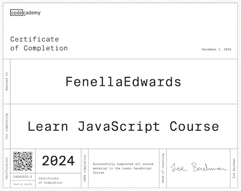

Hi, i'm Fenella
I'm training to be a software developer. Welcome to my FAC Application Website.

Contact Me
My software development journey so far
I have taken a couple of basic HTML and CSS courses over the years. Learning to use Github with Founders and Coders since September 2024, I have been able to apply this knowledge. I have enjoyed designing and publishing multiple websites for work and for projects. My current website is a profile and portfolio i use for my chef services and supper club events. It is hosted by Shopify. In the past i have also hosted websites using Squarespace and Wordpress.
In September I began my software development journey. FAC set me up on Discord and Github. The FAC
Tuesday meet-up community gave me a crash course in command line, git and the terminal.
I signed up to Codecademy and began two courses: "Javascript" and "Build a Website with HTML,
CSS and Github pages". Fast forward to November and i was ready to play JavaScript Codewars kata,
start building my first website and start learning about coding games.
I am grateful to have been able to study with the FAC community (meetups and Discord channel). I have
learned a lot from alumni and stay in touch with them through Github, Discord and LinkedIn.
JavaScript
Learning JavaScript in two months has been my biggest challenge with regards my application to FAC. I signed up to a Codecademy course (before i knew about the Freecodecamp courses) and put in the hours to complete the course. You can view my certificate here:
Next step: applying my new JavaScript skills to Codewars kata. To begin with Codewars made no sense to me so i watched Youtube videos of people solving JavaScript kata's. I also use MDN Web Docs as a reference and chat GPT as a learning tool: 1. Entering the entire kata when all else had failed and 2. breaking down the kata and asking chat GPT to help me with one step of the kata. My work to learn data structures, debugging, algorithm scripting, ES6 and more is ongoing.
Website
This website is built using HTML, CSS and vanilla JavaScript. I always enjoyed designing websites and
I am loving now knowing which tools i need to put together a website without using a host platform.
To work on my website I use VS Code editor, Chrome DevTools, the command line, terminal, and git.
The site is hosted by Github pages and you should be able to view the repository and code on my
Github profile.
The design of this site is inspired by the site of an FAC alumni. It is a work in progress and you can
see I have created a page for projects and a page for a game. I am developing my CSS skillset and
working my way through a Codecademy course, still to cover advanced CSS: flexbox and CSS transitions.
Game
If you navigate to the top of this page you will find a link to "Play Pong". My approach to learning how to make games has been to take a game (this one is from the FAC github planning repository), pull it apart, and re-build it. Pong is a work in progress.
What can i offer the course?
I am a chef, which i love, but i am looking for a career change that will keep me off my feet and still allow me to be creative and solve problems. I have worked in corporate and domestic kitchens. Cooking at weddings in tents and having to wash up using the garden hose has taught me to always hold on to my sense of humor. Along with my new software development skills and a stellar carrot cake recipe, I can bring a hardworking and professional approach to this course.
What would i like to achieve?
At this stage i have a number of ideas about how i want to apply the skills i develop on the FAC course. DevOps, full-stack software engineering, cloud engineering and website development are some of them. I also can't ignore the impact AI is having on the world and am looking for ways to incorporate this into my work.